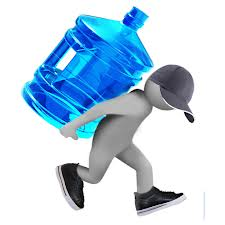

Доставка питної води від виробника: як обрати надійного постачальника
Ринок доставки води величезний, і на перший погляд здається, що всі пропонують одне й те саме: «чиста вода, швидка доставка». Але за цими словами часто ховаються різні рівні якості. Помилка у виборі постачальника може призвести не лише до поганого смаку води, а й до ризику для здоров'я.
На що звернути увагу під час вибору компанії з доставки?
Щоб не помилитися, поставте постачальнику три головні запитання:
1. Де і як очищується вода?
Якщо компанія відповідає «у нас стоять хороші фільтри», цього недостатньо. Надійний виробник чітко опише технологію: Зворотний осмос $\rightarrow$ Озонування $\rightarrow$ УФ-стерилізація. Якщо в ланцюжку немає осмосу, отже, у воді можуть залишитися важкі метали та солі жорсткості.
2. Яка тара використовується?
Дешевий пластик може виділяти токсини. Переконайтеся, що компанія використовує сертифікований харчовий полікарбонат і має систему професійного миття обігової тари.
3. Наскільки прозора логістика?
Подивіться на зону доставки та графік. Надійний постачальник працює в конкретних районах (наприклад, Бровари та Київ) і має чіткі часові вікна доставки, щоб вам не довелося чекати машину цілий день.
Чому клієнти обирають Crystal Water?
Ми збудували свою роботу на трьох принципах: Чесність, Технологія, Сервіс.
- Чесність: Ми відкрито розповідаємо про свої методи очищення.
- Технологія: Ми інвестуємо в найкраще обладнання, щоб кожна крапля була безпечною.
- Сервіс: Ми цінуємо ваш час. Доставка працює як годинник, а наші працівники ввічливі та акуратні.
Ваша родина довіряє вам вибір води. Довіряйте вибір виробника.
Замовте доставку очищеної води від Crystal Water у Бровари та Київ.
Замовити першу доставку